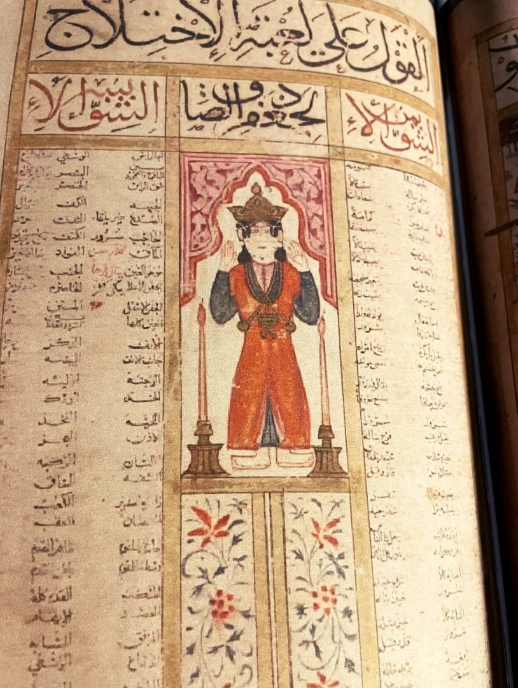

Bodleian Library, MS. Bodl. Or. 133 · Arabic · late 14th century
Kitab al-Bulhan, decoded
كتاب البلهان
Seven painted pages from the Book of Wonders, a divination and astrology compendium made in Jalayirid Iraq around 1390–1410. Each page opens with a red or black headline that names its subject. Reading those headlines is how the pictures are decoded below.
How each page was read
Find the formulaEvery headline starts with القول على (al-qawl ʿalā), "the discourse on…". What follows is the subject.
Read the nameThe scribe writes large thuluth with stacked letters and few dots, so the name is read letter by letter, right to left.
Check against the pictureColour, heads, horns and attendants should match what the name promises. A red king should be red.
Grade the readingClear headline and matching picture: firm. Cropped or damaged headline: marked as tentative.
Sheet one
Four jinn
القول على صفة الملك الأحمر وأعوانه
The Red King and his helpers
Sounds
al-qawl ʿalā ṣifat al-malik al-aḥmar wa-aʿwānih
Means
"The discourse on the description of the Red King and his helpers."
Who
Al-Aḥmar, one of the seven jinn kings of the week. He rules Tuesday and belongs to Mars, which is why everything about him is red and why he holds a sword.
Picture
Red face, red tunic, sword across the lap, crowned heads stacked behind him, two red dragon-snouted helpers at his sides.
Firm reading
… العينية النظر …
A horned jinn, headline cut off
Sounds
… al-ʿayniyya al-naẓar …
Means
Only the end of the line survives in this crop. Both visible words come from the vocabulary of the eye and the gaze, which points toward the evil eye, but the name itself is missing.
Picture
Curved black horns, wild hair, heavy beard, arms crossed over the chest, bare belly. A grey dog-headed helper and a dark horned one attend him. A line of talismanic "spectacle letters" sits at top left.
Name not readable from this image
القول على الكابوس وأعوانه
Kābūs, the nightmare
Sounds
al-qawl ʿalā al-kābūs wa-aʿwānih
Means
"The discourse on the Nightmare and his helpers." Kābūs is still the everyday Arabic word for a nightmare, from a root meaning to press down.
Picture
A brown demon drops head-first onto a man asleep under a patterned quilt. Animal-headed helpers watch from the margins. This is sleep paralysis drawn six centuries ago.
Headline cropped, picture confirms
القول على شمهورش …
Shamhūrash, the judge of the jinn
Sounds
al-qawl ʿalā Shamhūrash …
Means
"The discourse on Shamhūrash…" The final word of the line is unclear in this photo.
Who
The jinn king of Thursday and of Jupiter, known in the magical tradition as a judge. That fits the turban, the only scholar's headgear on these pages.
Picture
Pale grey body, blue turban, gold collar. Above him a number grid (a wafq, or magic square) and a six-pointed Seal of Solomon, the sign used to bind jinn.
Probable reading
Sheet two
Fever and the Mountain of Fire
القول على الحمّى …
Ḥummā, the fever demon
Sounds
al-qawl ʿalā al-ḥummā …
Means
"The discourse on Fever…" The second half of the line is rubbed.
Picture
One dark body with three heads: a horned bull-like face in the middle and a human profile on each side. Red tongues of heat curl from the mouths. The tail ends in two serpent heads. Two Solomonic stars guard the top corners.
Why three
Medieval medicine counted fevers by their rhythm: daily, every third day, every fourth day. Three heads is a likely way to draw that.
Probable reading
القول على جبل النار وطيره
The Mountain of Fire and its birds
Sounds
al-qawl ʿalā jabal al-nār wa-ṭayrih
Means
"The discourse on the Mountain of Fire and its birds."
Picture
A blue-grey crag wrapped in red flame, with white birds perched and flying inside the fire unharmed. Arabic wonder books place the samandal, the creature that lives in fire, on mountains like this one.
Firm reading
Sheet three
The twitching chart

القول على لعبة الاختلاج
Ikhtilāj: fortunes from a twitch
Sounds
al-qawl ʿalā … al-ikhtilāj
Means
"The discourse on the chart of involuntary twitching." This is palmomancy: when a part of your body twitches by itself, the chart tells you what is coming.
Layout
Red headers split the page into الشق الأيمن (the right side of the body) and الشق الأيسر (the left side). The inner columns list body parts from head to foot. The outer columns give the omen for each.
Figure
A crowned person in a red robe raises both hands to the ears, standing between two lit candlesticks. The body is the index for the table.
Word on the page
Sounds
Means
الجبهة
al-jabha
forehead
الحاجب
al-ḥājib
eyebrow
الأنف
al-anf
nose
الكتف
al-katif
shoulder
الكف
al-kaff
palm
الركبة
al-rukba
knee
الساق
al-sāq
shin
الكعب
al-kaʿb
ankle
الإبهام
al-ibhām
thumb or big toe
سرور
surūr
omen: joy
كرامة
karāma
omen: honour
خير
khayr
omen: good fortune
Title and headers firm, small script sampled
The photo is taken at an angle and the small script is soft, so only the words above could be read with confidence. Matching a specific body part to its specific omen needs a sharper, flat scan of this folio.
From page to screen
The five-minute film
The findings explained from the start, with captions on screen. Live-action footage of the Red King, the Nightmare, Fever and the Mountain of Fire plays in slow motion behind those chapters, with the readings, labels and diagrams animated on top. The footage is AI-generated and is labelled on screen.
Chapters
0:00What is this book?
Where and when it was made, and what it is for.
0:46The key
Every headline opens with the same two words. What follows is the name.
1:20The Red King
The first reading, and why a king of Tuesday and Mars is red.
2:26The Nightmare
Kābūs, the weight on the sleeper's chest.
2:56The Judge
Shamhūrash, the magic square and the Seal of Solomon.
3:30Fever
Three heads, and a guess at why.
3:56The Mountain of Fire
Birds that live in flame.
4:16The twitching chart
Fortunes read from the body, then a summary of how firm each reading is.